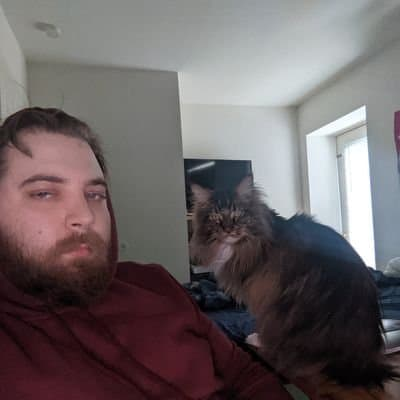

About me
A Navy veteran passionate about a smattering of topics, from gaming to sociology. I have experience in occupations from retail, to healthcare, to serving. Coming from a career
in the service industry, spending 4 years behind the bar, and stepping into the world of tech for the first time, I am excited for new
possibilites.
While coding has given me a direction towards what I wish to do as a career, I am still keeping myself open to the many facets that comes with the skills I have learned.
Fun fact: I have the world's sleepiest cat